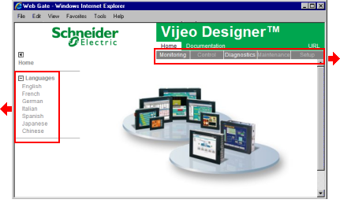

|
|
|
|
|
|
|
|
|
|
 |
|
|
|
The Main Menu Bar consists of the following menu items:
Monitoring - In this menu, the user can connect to the target machine in a frame or in a new window, and monitor real-time information using variable lists.
Control - Not applicable.
Diagnostics - In this menu, the user can view information about the project running on the target and information on the target's TCP/IP parameters.
Maintenance - In this menu, the user can view data files stored on the target.
Setup - Not applicable.
The Sub Menu bar changes depending on the menu item selected in the Main Menu bar. Some menu items are not applicable. Below is a list of the applicable sub menu items.
Monitoring
In Frame
Web Gate displays in the web page within a frame.
New Window
Web Gate displays in a new window.
Install Web Gate Control
Provides instructions on how to install the Web Gate ActiveX control used to display Web Gate on the browser.
Variable Browser
Allows you to view and modify variables in the target machine. In Frame displays the Variable Browser within a frame. New Window displays the Variable Browser in a new window.
Diagnostics
Project
Displays the parameters of the project such as panel type, Project Name, Target Name, Editor Version, and Runtime Version.
Ethernet & TCP/IP
Displays the Ethernet & TCP/IP parameters for the target.
Memory
Displays the amount of DRAM memory available and the total amount of DRAM memory used.
Maintenance
Web Server
Allows you to view or copy web server files.
Data (Main, Secondary, Removable)
Allows you to view or copy data files from the target machine's main, secondary, and removable drives.